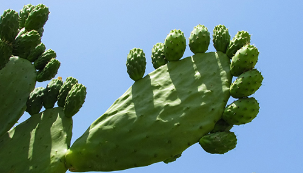
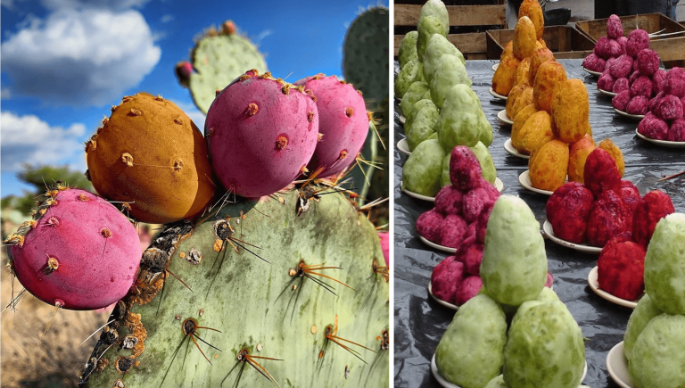
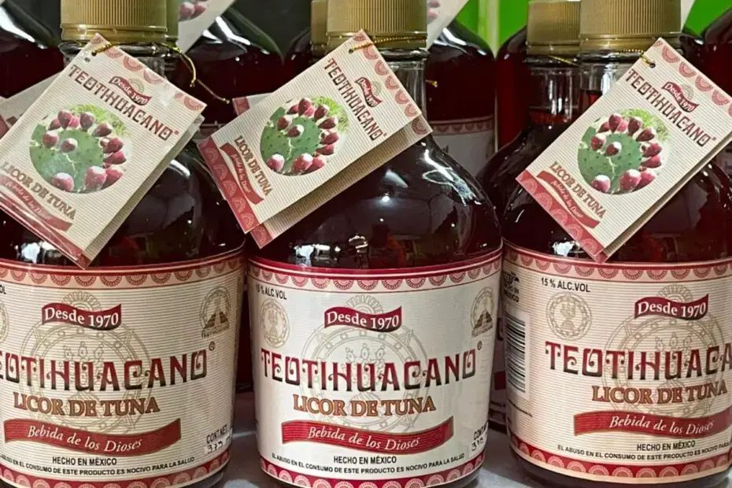
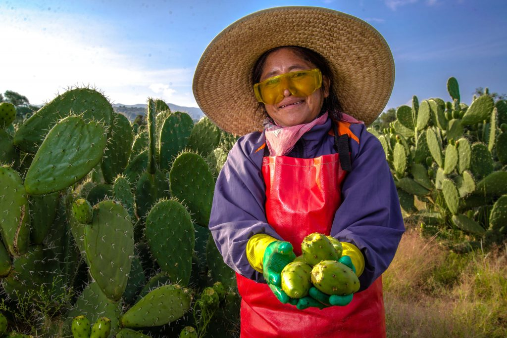

The global prickly pear market has been growing gradually at present. The top exporter in 2022 was Canada, with an export value of 2.89 million USD , while the United States was the top importer in 2022, with an import value of 4.47 million USD , an increase of 6% over 2021. On the other hand, consumer demand for this fruit has also been growing slowly and continues to thrive thanks to its nutritional value and versatility in cooking and traditional medicine.

Mexico is considered the largest international producer of prickly pear, followed by South American countries such as Chile, Brazil and Argentina where large quantities are also produced. In Europe, Italy is the largest producer, while Morocco is the leading producer in Africa.
The prickly pear is a common fruit in Mexican markets, especially between July and September, which is the peak production period. In 2019 alone, up to 428,300 tons of this sweet delicacy were produced. And although its production is below other fruits such as oranges, bananas and apples, prickly pear fruits can be considered an important source of various nutrients.
Prickly pear pulp is a good source of carbohydrates, fiber, vitamin C, vitamin A, calcium, potassium and not so well known components such as phenolic compounds, which are known to have several beneficial effects as part of a balanced diet. Its consumption can also be considered as a natural alternative to reduce cholesterol and triglyceride levels, relieve the discomfort caused by ulcers and help stabilize and regulate blood sugar levels.
Although it is more common to find green prickly pears, there are also yellow, orange, red and purple ones. In these different colored varieties there is a group of compounds called betalains, pigments responsible for conferring the color. As an additional benefit, it is also known that the consumption of betalains can reduce cholesterol and triglyceride levels in the blood.

Prickly pears can be used for the production of juice, jam, vinegar and liquors. From the varieties of different colors are obtained dyes that can be used as an alternative to synthetic dyes in food. The peel of this fruit is usually discarded, but it can also be considered an important source of pigments. Moreover, even edible oil with a high content of beneficial compounds, such as unsaturated fatty acids, vitamin E and vitamin K, can be obtained from the seeds.

As mentioned above, Mexico is the world’s leading producer of prickly pear. The main advantage of prickly pear cactus is its low water requirement, which in drought areas makes it a more viable crop than beans and corn. In areas where it is grown extensively, prickly pear cactus is the main source of income for many Mexican families. It is also important to mention that Mexico is the center of origin of the prickly pear, with at least 100 species from which edible fruits can be obtained.

Good for you! Now that you know all this, aren’t you craving for some prickly pears? See you at the market!
If you want to know a little more about the prickly pear, do not hesitate to consult the pages and documents in the following links:
- Frutas, una delicia del campo mexicano.
- Razones para comer tunas más seguido.
- Innovación de productos de alto valor agregado a partir de la tuna mexicana.
- Ecología del cultivo, manejo y usos del nopal.
- México exporta tuna y xoconostle a EU, Canadá, Japón, Emiratos Árabes Unidos, Francia y Reino Unido.
- 2023 Prickly Pear global market overview today - Tridge.
- Global Production of Cactus Pear - South Africa Online.
- South Africa: Prickly pear grower has big plans for the fruit - FreshPlaza.
- Prickly Pear Market Summary - Produce Blue Book.
- Pears | Agricultural Marketing Resource Center.
The text in this publication is free to use under license Creative Commons Attribution 4.0 International License.